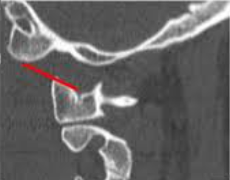

Adapted from: Joaquim AF, Schroeder GD, Vaccaro AR. Traumatic atlanto-occipital dislocation. Int J Spine Surg. 2021. https://doi.org/10.14444/8095
1) Description of Measurement
CCI measures the joint space between the occipital condyles and the lateral masses of C1. It is currently considered the most reliable CT-based metric for diagnosing occipitoatlantal dissociation.
2) Instructions to Measure
3) Normal vs. Pathologic Ranges
4) Important References
Smith P, Linscott LL, Vadivelu S, Zhang B, Leach JL. Normal Development and Measurements of the Occipital Condyle-C1 Interval in Children and Young Adults. AJNR Am J Neuroradiol. 2016;37(5):952-957. doi:10.3174/ajnr.A4543
Corcoran B, Linscott LL, Leach JL, Vadivelu S. Application of Normative Occipital Condyle-C1 Interval Measurements to Detect Atlanto-Occipital Injury in Children. AJNR Am J Neuroradiol. 2016;37(5):958-962. doi:10.3174/ajnr.A4641
Bono CM, Vaccaro AR, Fehlings M, et al. Measurement techniques for upper cervical spine injuries: consensus statement of the spine trauma study group. Spine. 2007;32:593-600.
Joaquim AF, Schroeder GD, Vaccaro AR. Traumatic Atlanto-Occipital Dislocation-A Comprehensive Analysis of All Case Series Found in the Spinal Trauma Literature. Int J Spine Surg. 2021;15(4):724-739. doi:10.14444/8095
5) Other info....
In pediatric groups, the CCI shows 100% sensitivity and specificity when used correctly, unlike the Rule of 12 (BDI/BAI), which has a sensitivity of 31-50%. This is because the BDI depends on dens (ossification) and the BAI on the basion (shape), whereas the CCI directly measures the injury site.